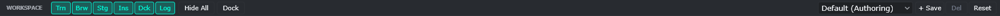
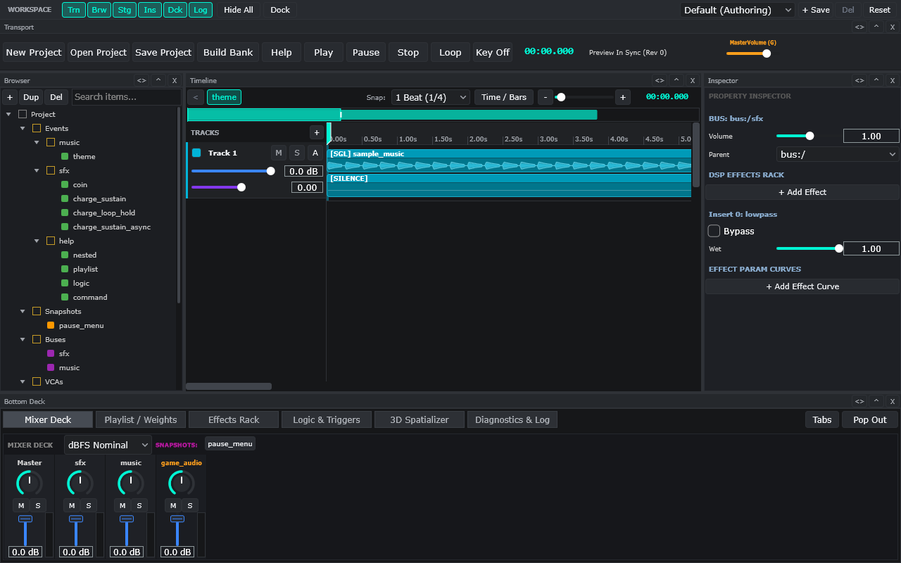
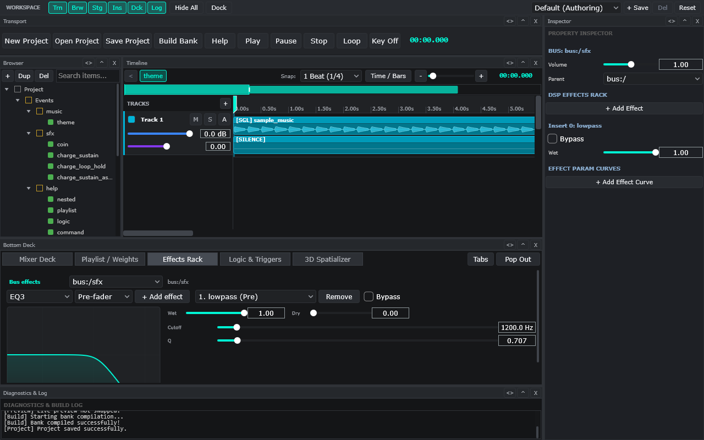

Capítulo 1 — Visão Geral da Interface e Workspace
Use a Workspace Bar para localizar, reabrir e encaixar os painéis de autoria, mixagem e diagnóstico. Comece pelo preset Default (Authoring) para seguir os exercícios do manual.
Tudo fica acessível sem janelas modais intrusivas: você seleciona itens no Navegador à esquerda, orquestra a linha do tempo e faixas no centro, ajusta números finos no Inspetor à direita e opera mixagem, efeitos ou lógica adaptativa no Bottom Deck — com total liberdade para redimensionar, desacoplar ou salvar layouts personalizados para cada etapa do seu fluxo de trabalho.
1. A Barra de Workspace (Templates, Presets e Modo Foco)
Localizada na borda superior da janela, acima da barra de transporte, a Workspace Bar gerencia a visibilidade de painéis, templates de produção e configurações de layout personalizadas:

Recursos da Workspace Bar
| Controle | Tipo | Como Funciona |
|---|---|---|
| Trn, Brw, Stg, Ins e Dck | Pills de Visibilidade | Brw, Stg, Ins e Dck mostram ou ocultam Browser, Stage (Timeline), Inspector e Bottom Deck. Já Trn (Transport Bar) é uma barra permanente: alterna entre modo compacto e expandido ou re-encaixa a barra se estiver flutuante. Log (Diagnostics & Log) e Prj (Project Toolbar) ficam no menu overflow .... |
Menu Overflow (...) |
Menu da WorkspaceBar | Concentra Diagnostics & Log (Log), Project Toolbar (Prj), Hide All / Restore, submenu Dock Slots, Delete Custom Preset e Reset Layout. |
| Seletor de Templates (Presets) | Menu Suspenso |
Alterna entre arranjos pré-configurados de fábrica:
|
| + Save (Salvar Layout) | Botão de Ação | Salva a geometria, proporções e divisões atuais como um novo layout personalizado em oae_studio_layout.json. |
| Del (Excluir Layout) | Botão de Ação | Exclui o preset personalizado ativo (templates nativos são protegidos e não podem ser apagados). |
| Reset | Restauração | Retorna a geometria e o posicionamento de todas as divisões ao padrão original de fábrica. |
| Dock | Menu por painel | Escolha o painel e use Visible para mostrar ou ocultar. Os itens Slot: permitem escolher a região de encaixe ou abrir uma janela flutuante. |
2. Mapa dos Painéis Principais
Esta captura mostra a área de autoria com Diagnostics & Log embutido no Bottom Deck.

- 1. Topo Modular (Project Toolbar + Transport Bar): A
Project Toolbar(marcaOPENAUDIO,New,Open,Save,Build Bank [F7],?Help) e aTransport Bar(Play,Pause,Stop,Loop,Key Offem 24×24 contorno/tint, readout de timecode/BPM real, status, pillParams (N)e medidorKSystemMeterL/R) ficam lado a lado no topo em 36 px com grip lateral tátil (::). - 2. Navegador do Projeto (Esquerda): Cabeçalho único
BROWSER(24 px), 4 abas (Events,Snapshots,BusescomVCAs,Assets), busca e lista fixaPROJECT PARAMETERS (N)no rodapé. - 3. Stage Central: Cabeçalho
STAGE(24 px),StageModeHeader(38 px) com seletor centralizado[ Timeline | Layers ], sub-barra exclusiva de Snap/Zoom no modoTimeline, faixa retrátilLIVE PARAMSe pistas ouLayerStackViewcom máscara plana. - 4. Inspetor (Direita): Cabeçalho único
PROPERTY INSPECTORcom cadeadoLocke cardsValueBox(Clip,Track,MÁSCARA & TRANSIÇÃOcontextual eEvent). - 5. Bottom Deck: Cabeçalho único
BottomDeckHeader(34 px) com alça arrastávelBOTTOM DECK, 7 abas ordenadas (Mixer,Effect Chain,Logic Conditions,Playlist,3D Spatializer,Parameters (N)eDiagnostics), menu de contexto das abas e botão únicoPop-Out ^. - 6. Diagnostics: Mostra mensagens de prévia, compilação e conexão. Pode aparecer como aba do Deck ou como painel independente via menu
....
3. Sistema de Docking Estilo Unity 6 e Cabeçalhos Grafite
O sistema de docking do OpenAudio Studio adota as convenções modernas do Unity 6:
- Arraste na borda externa do workspace: Cria uma nova divisão de ponta a ponta na janela (ex: arrastar o Inspector para a borda direita externa faz com que ele ocupe toda a altura útil da tela).
- Arraste na borda de um painel existente: Divide a área daquele painel específico em duas metades (horizontal ou vertical).
- Arraste sobre a barra de abas de um painel: Agrupa os dois painéis em um mesmo container com abas selecionáveis.
- Cabeçalhos em Grafite: Superfícies neutras de alta legibilidade. Painéis de aba única exibem o título integrado de forma sutil; painéis de abas múltiplas destacam a aba ativa e mantêm foco de teclado evidente.
Mantenha os logs visíveis enquanto trabalha

- Parta do preset Default (Authoring). Use Ins, Dck e Log na Workspace Bar caso algum painel esteja oculto.
- Arraste a aba Inspector para a borda direita externa do workspace. Solte quando o destaque cobrir a coluna direita inteira.
- Arraste a aba Diagnostics & Log para a borda inferior do Bottom Deck. Solte quando o destaque limitar o novo painel à largura do Deck.
- Alterne entre Mixer Deck e Effects Rack. O log deve continuar visível abaixo do Deck, com o Inspector ocupando toda a altura útil à direita.
Use + Save e dê um nome ao arranjo para recuperá-lo pelo seletor. Hide All e Restore ocultam e reexibem a disposição atual. Para voltar ao arranjo de fábrica, use Reset.
4. Atalhos Globais Essenciais
| Atalho | Ação | Quando Usar |
|---|---|---|
| Ctrl + Z | Desfazer (Undo) | Volta até 100 ações de histórico. O motor agrupa arrastos contínuos de sliders em uma única entrada inteligente. |
| Ctrl + Y | Refazer (Redo) | Reaplica ações desfeitas. |
| Space | Play / Pause | Inicia ou pausa rapidamente a audição do evento ativo enquanto edita pistas. |
| F2 | Renomear item selecionado | Renomeia eventos, barramentos, snapshots ou parâmetros mantendo todas as referências do projeto intactas. |
| Ctrl + D | Duplicar item selecionado | Duplica o item selecionado quando o foco está no Browser. Para copiar um clipe, selecione-o e use Duplicate Clip no Inspector. |
| Del | Excluir item selecionado | Remove o item selecionado da árvore ou clipe da timeline. |
| F1 | Manual Oficial Offline | Abre a documentação técnica no navegador padrão sem exigir conexão à internet. |
5. Servidor MCP Integrado e Automação Externa
O OpenAudio Studio é o primeiro software de áudio para jogos com um servidor nativo embutido baseado no Model Context Protocol (MCP). Através do MCP, agentes de inteligência artificial (como Google Antigravity, Claude Code e Cursor) e scripts de teste automatizado podem controlar o aplicativo em tempo real.
Ferramentas Disponíveis via MCP:
| Ferramenta MCP | Capacidade e Ação no Studio |
|---|---|
studio_transport |
Controla a barra de transporte: Play, Pause, Stop, Loop e Key Off remotamente. |
studio_select_item |
Seleciona qualquer item do projeto no navegador pelo caminho (ex.: event:/sfx/coin ou bus:/music). |
studio_set_mixer_fader |
Ajusta o ganho em dB, pan estéreo ou estado de mute/solo de qualquer channel strip do console de mixagem. |
studio_trigger_control |
Alterna abas do Bottom Deck e aciona botões da interface, como Log na Workspace Bar. |
studio_move_clip |
Move clipes na timeline entre faixas ou desloca o ponto temporal em milissegundos. |
studio_build_bank |
Compila e publica o Master Bank e bancos de conteúdo, gerando os arquivos .bank e catálogos JSON. |
studio_ui_screenshot |
Captura em alta resolução qualquer componente da janela (como a Workspace Bar, o Inspector ou a Timeline) gerando arquivos PNG sem distorções. |
studio_ui_inspect |
Retorna a árvore de acessibilidade e propriedades visuais dos componentes JUCE para verificação de testes. |
Para desenvolvedores e engenheiros de áudio que desejam integrar o Studio aos seus assistentes locais, o servidor pode ser iniciado via CLI com o argumento --mcp (comunicação via stdio JSON-RPC) ou via WebSocket local na porta 7451.